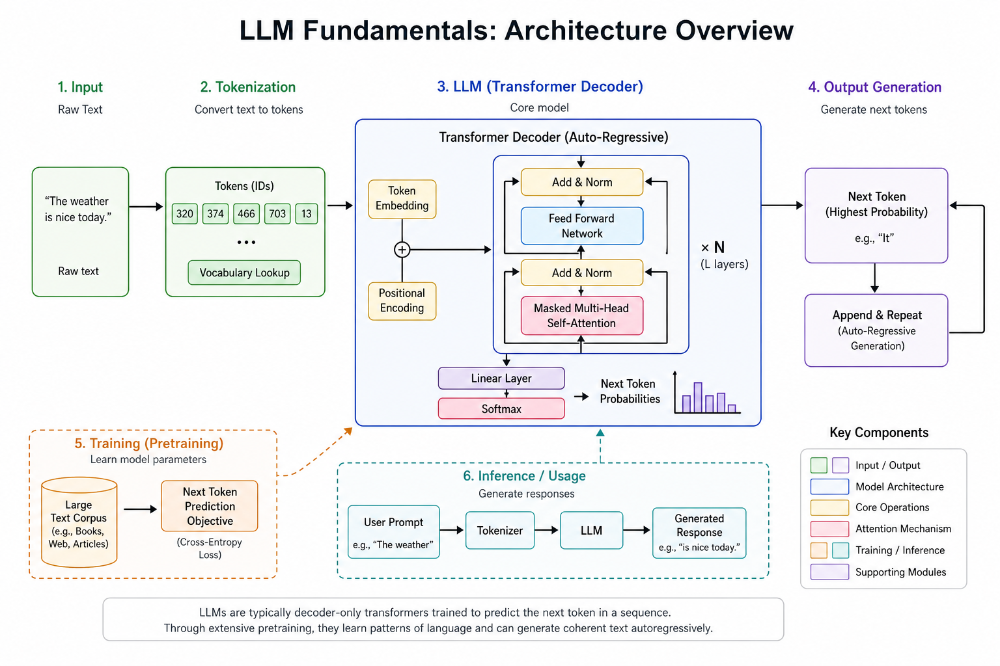
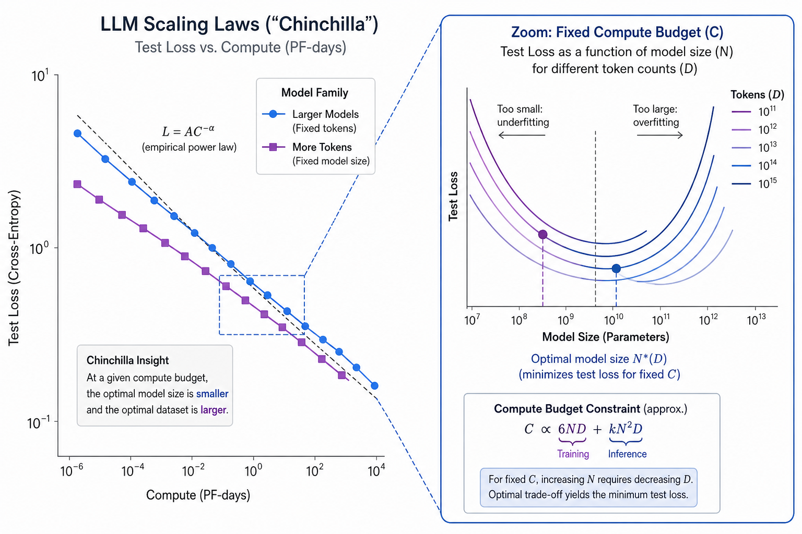
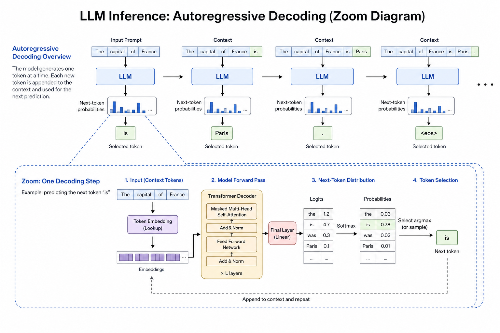

LLM Fundamentals // Fundamentals
What large language models are, how decoder-only transformers predict text token-by-token, why scaling laws and compute budgets matter, and how training differs from inference serving at production scale.

Whiteboard overview: pre-training on internet-scale text learns next-token prediction; alignment (SFT/RLHF) shapes behavior; inference serves autoregressive decoding behind an API gateway with token billing, KV cache, and sampling controls.
01 — What & Why
What is an LLM?
A large language model is a neural network (almost always a decoder-only transformer) trained to assign probabilities to the next token given all prior tokens. At inference time it autoregressively samples one token at a time, appends it to context, and repeats until a stop condition.
Modern chat products (ChatGPT, Claude, Gemini) wrap the raw model with system prompts, tool calling, and RAG — but the core engine is still next-token prediction over a fixed vocabulary.
Functional requirements (as a building block)
- Accept a prompt (messages or raw text) and generate coherent continuation
- Support streaming token output for UX latency
- Configurable creativity via
temperature/top_p - Optional structured outputs (JSON mode, function schemas)
- Respect a context window cap (e.g. 128K tokens)
Non-functional requirements
- Latency: time-to-first-token (TTFT) + tokens/sec; users feel TTFT > 500ms
- Cost: billed per input + output token; dominated by long contexts and big models
- Throughput: batching + continuous batching on GPU clusters
- Reliability: rate limits, retries, fallbacks across model tiers
- Safety: alignment reduces harmful outputs; not a substitute for app-level guardrails
Interview anchor: An LLM is not a database and not a search engine — it is a conditional distribution over token sequences. Everything else (RAG, agents, tools) is orchestration around that primitive.
01a — Core Concepts
| Term | Definition | Gotcha |
|---|---|---|
| Token | Subword unit from BPE/byte-level tokenizer; ~4 chars/token English avg | Same text → different token counts across models; always count with tiktoken |
| Context window | Max tokens in prompt + completion; attention is O(n²) naive | Long prompts cost linearly in $ and quadratically in compute without sparse attention |
| Parameters | Weights learned in training (7B, 70B, 405B) | More params ≠ always better $/quality; inference memory scales with size |
| Pre-training | Self-supervised next-token loss on massive corpora | Model knows language patterns, not your private data unless fine-tuned or RAG |
| SFT | Supervised fine-tuning on instruction/response pairs | Teaches format and helpfulness; can overfit narrow demo styles |
| RLHF / DPO | Preference optimization from human or AI rankings | Improves safety/refusal; may reduce raw capability on some tasks |
| Decoder-only | Causal mask: token i only attends to j ≤ i | GPT-style; encoder-decoder still used for translation T5-style |
| KV cache | Stores key/value projections per layer for prior tokens | Without it, each new token recomputes full attention — catastrophic at long context |
| Perplexity | exp(avg NLL); lower = better language modeling | Does not correlate perfectly with chat usefulness post-RLHF |
| Hallucination | Fluent but factually wrong output | Fundamental to generative LM; mitigate with RAG + citations + abstention |
| Embedding | Dense vector from encoder head for similarity search | Chat model hidden states ≠ dedicated embedding models for retrieval |
| Quantization | INT8/INT4 weights for faster/cheaper inference | Small quality drop; AWQ/GPTQ need calibration data |
01b — API Surface (OpenAI Chat Completions)
The de-facto contract for production apps. Anthropic Messages API is analogous (system + messages + tools).
POST https://api.openai.com/v1/chat/completions
Authorization: Bearer $OPENAI_API_KEY
Content-Type: application/json
{
"model": "gpt-4o",
"messages": [
{"role": "system", "content": "You are a concise assistant."},
{"role": "user", "content": "Explain KV cache in 3 bullets."}
],
"temperature": 0.3,
"max_tokens": 256,
"stream": true
}
Response (non-streaming)
{
"id": "chatcmpl-...",
"choices": [{
"message": {"role": "assistant", "content": "..."},
"finish_reason": "stop"
}],
"usage": {
"prompt_tokens": 42,
"completion_tokens": 118,
"total_tokens": 160
}
}
Python client
from openai import OpenAI
client = OpenAI()
stream = client.chat.completions.create(
model="gpt-4o-mini",
messages=[{"role": "user", "content": "Hello"}],
stream=True,
)
for chunk in stream:
delta = chunk.choices[0].delta.content
if delta:
print(delta, end="", flush=True)
Key fields interviewers ask about
| Field | Purpose |
|---|---|
messages[] | Chat roles: system sets behavior; user/assistant alternate history |
temperature | Scales logits before softmax; 0 = greedy, 1+ = creative |
top_p | Nucleus sampling: sample from smallest set with cumulative prob ≥ p |
max_tokens | Cap completion length (output side of context budget) |
stream | SSE chunks; improves perceived latency |
tools / tool_choice | JSON schema for function calling; model emits tool_calls |
response_format | {"type":"json_object"} for structured output |
02 — When to Use / When NOT
| Scenario | Use LLM API? | Alternative |
|---|---|---|
| Open-ended language (summarize, draft, classify with nuance) | Yes | Smaller model + prompt if latency/$ tight |
| Exact deterministic rules (tax brackets, eligibility) | No | Code + rules engine; LLM for explanation only |
| Private / fresh facts | LLM + RAG | Fine-tune if style fixed; long context if doc fits once |
| Sub-10ms latency, millions QPS | No | Traditional ML ranker / heuristics |
| Structured extraction at scale | Maybe | Fine-tuned smaller model or regex + NER |
| Math/code with guarantees | Careful | Tool use (calculator, sandboxed interpreter) |
| Multimodal (image in) | Vision model | Separate pipeline vs text-only GPT |
Rule of thumb: Use APIs when language flexibility beats engineering cost. Use classical systems when correctness, latency, or cost must be provable.
03 — Architecture
TRAINING (offline, weeks, $M–$B)
Raw text corpus ──► Tokenizer ──► Decoder Transformer
│ │
│ Next-token CE loss
│ ▼
│ Base model checkpoint
│ │
├── SFT (instruction data)
└── RLHF/DPO (preferences)
│
▼
Aligned model weights (.safetensors)
INFERENCE (online, ms–s, $/1M tokens)
Client ──► API Gateway ──► Router (model tier, region)
│ │
│ GPU pool (vLLM / TGI)
│ │
│ ┌──────────┴──────────┐
│ Prefill (prompt) Decode (1 tok/step)
│ + KV cache grow + continuous batching
▼
Stream SSE / JSON + usage{prompt,completion}_tokens
04 — Deep Dive: Decoder-Only Transformers
GPT, Llama, Mistral, Claude (internally) are decoder-only: stacked transformer blocks with causal self-attention so position t cannot peek at t+1.
One block (simplified)
x ──► LayerNorm ──► Multi-Head Self-Attention (causal mask) ──► + residual ──► LayerNorm ──► FFN (up-project → GELU → down-project) ──► + residual
- Self-attention: each token queries all prior keys/values; complexity O(n²) in sequence length n
- Multi-head: parallel attention subspaces; typical 32–128 heads at scale
- Positional encoding: RoPE (rotary) common in Llama/Mistral; extrapolates better than absolute sinusoidal
- FFN: ~2/3 of parameters; SwiGLU variants in modern stacks
vs encoder-decoder (T5, BART): encoder sees full source; decoder cross-attends. Better for seq2seq translation; chat LLMs standardized on decoder-only + prompt formatting.
05 — Deep Dive: Scaling Laws
Kaplan et al. and Chinchilla (Hoffmann et al.) showed loss improves as power laws in model size N, dataset size D, and compute C.
- Kaplan (GPT-3 era): train biggest model you can afford on fixed compute
- Chinchilla-optimal: for compute budget C, balance N and D — often smaller model + more tokens than early GPT-3 runs
- Rule of thumb: ~20 tokens per parameter for Chinchilla-optimal pre-training (order-of-magnitude)
Implication for product teams: frontier quality jumps require 10× compute steps — most apps should ride APIs (GPT-4o, Claude 3.5) not train 70B from scratch.

Chinchilla insight: given fixed FLOPs, under-training a giant model wastes compute; optimal N×D pairing minimizes loss per dollar.
06 — Deep Dive: Inference vs Training
| Dimension | Training | Inference |
|---|---|---|
| Goal | Update weights via backprop | Fixed weights; forward only |
| Parallelism | Data + tensor + pipeline parallel across thousands of GPUs | Request batching; tensor parallel within node |
| Memory | Optimizer states (Adam: 2× params), activations, gradients | Weights + KV cache per request |
| Compute pattern | Large matmuls, all tokens in parallel (within batch) | Prefill (parallel) + decode (serial per sequence) |
| Cost model | Cluster-hours, checkpoint storage | $/1M tokens, GPU-second per request |
| Optimization | Mixed precision (bf16), ZeRO, flash attention | Continuous batching, speculative decoding, quantization |
Latency breakdown: TTFT dominated by prefill (prompt length). Tokens/sec dominated by decode (memory bandwidth + batch size).

Inference hot path: after prefill, each decode step reads growing KV cache, samples one token, appends until EOS or limit.
07 — Deep Dive: Model Families (GPT / Claude / Llama)
| Family | Access | Strengths | Interview note |
|---|---|---|---|
| GPT-4o / o-series (OpenAI) | API; no open weights | Strong generalist, tools, vision, JSON mode | o1/o3: more test-time compute (reasoning tokens) |
| Claude 3.5+ (Anthropic) | API; Messages + tools | Long context (200K), careful refusals, document Q&A | Constitutional AI lineage; cite PDFs in prod |
| Llama 3.x (Meta) | Open weights; self-host | Cost control, on-prem, fine-tune with LoRA | License constraints for >700M MAU products |
| Mistral / Mixtral | Open + API | Efficient MoE (Mixtral); EU hosting options | MoE: active subset of experts per token |
| Gemini (Google) | API + Vertex | Multimodal native, Google Cloud integration | Grounding with Search in GCP products |
Routing pattern in production
# Pseudo: cheap model filters, expensive model answers
def route(user_msg: str) -> str:
if is_simple(user_msg):
return "gpt-4o-mini" # ~$0.15 / $0.60 per 1M in/out
if needs_reasoning(user_msg):
return "gpt-4o" # or claude-sonnet-3-5
return "gpt-4o-mini"
08 — Deep Dive: Temperature & Top-p
Model outputs logits vector z over vocabulary. Sampling picks the next token.
Temperature
# logits' = logits / temperature # temperature → 0 : argmax (deterministic) # temperature → 1 : nominal training distribution # temperature > 1 : flatter, more random
Top-p (nucleus)
Sort tokens by probability; take smallest set whose cumulative mass ≥ p (e.g. 0.9); renormalize and sample. Adapts to sharp vs flat distributions.
| Use case | temperature | top_p |
|---|---|---|
| Code generation, JSON extraction | 0 – 0.2 | 1.0 or 0.95 |
| Customer support (consistent tone) | 0.3 – 0.5 | 0.9 |
| Brainstorming / marketing copy | 0.8 – 1.2 | 0.95 |
Setting both temperature and top_p low is usually redundant. Interview answer: use low temperature for determinism; top_p when you want adaptive vocabulary cutoff.
import math
import random
def sample_token(logits: list[float], temperature: float = 0.7) -> int:
scaled = [x / max(temperature, 1e-8) for x in logits]
m = max(scaled)
exps = [math.exp(x - m) for x in scaled]
total = sum(exps)
probs = [e / total for e in exps]
r = random.random()
cum = 0.0
for i, p in enumerate(probs):
cum += p
if r <= cum:
return i
return len(probs) - 1
09 — Production & Ops
Observability
- Log
prompt_tokens,completion_tokens, model id, latency (TTFT, total) - Trace prompts/responses in LangSmith, Langfuse, Helicone, or OpenTelemetry spans
- Track error rate: 429 rate limits, 5xx, timeout retries with exponential backoff
Cost control
- Model routing: mini for classification/routing; frontier for hard queries
- Prompt compression: summarize history; trim tool outputs
- Cache: exact prompt cache (OpenAI); semantic cache for RAG
- Batch API: 50% discount, 24h SLA for offline jobs
Serving stack (self-host)
- vLLM / TGI: PagedAttention, continuous batching
- Quantization: AWQ/GPTQ for 70B on 2×80GB
- Autoscaling: GPU queue depth → HPA on inference pods
Failure modes
- Context overflow → 400; truncate or chunk with map-reduce
- Runaway generation → always set
max_tokens - Provider outage → multi-vendor fallback (OpenAI ↔ Anthropic)
10 — Where It Shows Up
AI vertical (related sheets)
- Transformers & Attention — mechanism inside this primer
- Tokenization & Context Window — BPE, counting, truncation
- Pre-training, SFT & RLHF — alignment pipeline detail
- Prompt Engineering — practical control of decoder output
- Context Window & KV Cache — inference memory deep dive
- OpenAI / Anthropic API Patterns — production API idioms
- Model Serving (vLLM) — GPU inference stack
- LLM Observability — tracing and eval in prod
- RAG End-to-End — grounding LLM outputs
- Agent Architectures — tool loops around the LM
HLD systems (LLM as a component)
- Web Search Engine — ranking + LLM answer synthesis
- Notification System — personalized copy generation
- Instagram Feed — ML ranking; LLMs for moderation/captions
- Google Docs — collaborative editing + AI assist latency
- WhatsApp — scale + optional AI features in chat
11 — Common Pitfalls
- Treating the LLM as source of truth — always ground with retrieval or tools for facts
- Ignoring token math — 100-page PDF can exceed context or blow budget
- High temperature on extraction — JSON keys drift; use 0–0.2 + schema validation
- No max_tokens — runaway completions and bill shock
- Prompt injection via user content — “ignore previous instructions” in RAG docs
- Eval leakage — benchmark examples in fine-tuning data inflate scores
- Training-serving skew — different tokenizer/model version between offline eval and prod API
- Assuming open weights = free — 70B inference still needs serious GPU CapEx/OpEx